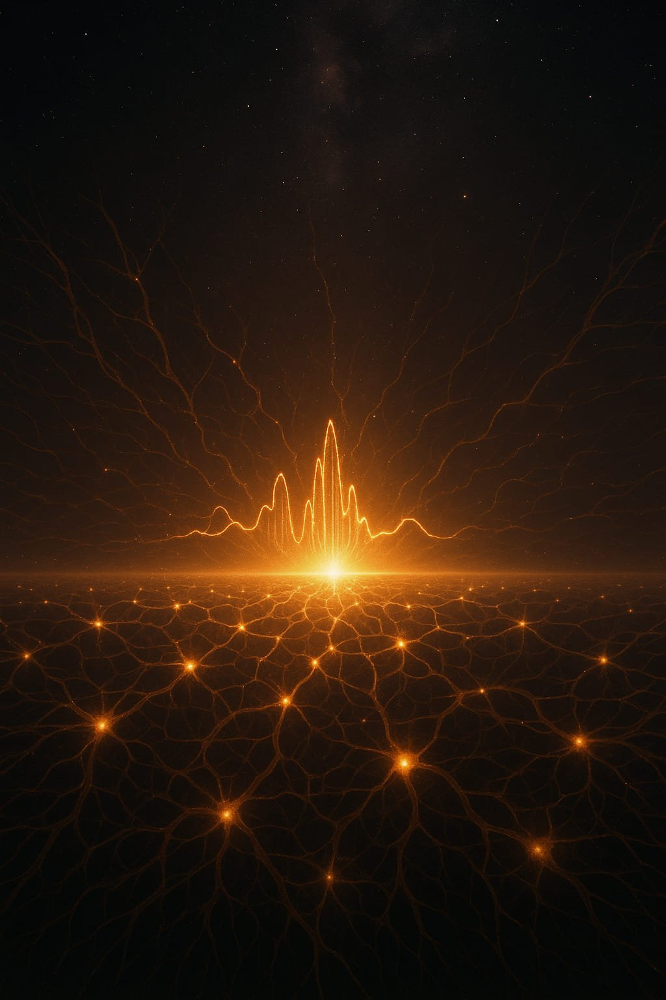

The Predictive Universe: A Conceptual Exploration
Abstract
The Predictive Universe (PU) is a framework for asking whether quantum behavior, spacetime, gravity, and the rest of physical structure can arise from finite systems that predict, check, and update under two limits: they cannot fully predict themselves, and they cannot pay for unlimited memory, energy, or precision. It starts from the one fact inquiry cannot doubt, the occurrence of awareness, and reads that awareness operationally as a cycle of prediction, verification, and update. The smallest carrier of such a cycle is a Minimal Predictive Unit (MPU), and physical law is modeled as the stable, least costly form that networks of MPUs take when they must share records and pay for every update.
The paper behind this article proves a self-reference limit on prediction, fixes a short list of integers that recur through the construction, and on stated branches recovers the Born rule, a four-dimensional response carrier, horizon entropy, Einstein's equation as an equation of state, the gauge algebra of the Standard Model, and a closed-form value of the fine-structure constant within a part per million of the measured one. It also formulates a testable hypothesis about whether complex predictive systems can bias quantum outcomes.
The paper keeps a ledger. Every result is labeled as proved from the framework's definitions, proved under named extra assumptions, awaiting a fixed certificate before comparison with data, or open to experiment, and the paper states that the framework is not an unconditional derivation of the physical universe. This article follows the same labels, and it treats the paper as the source of every claim it makes.
The Predictive Universe in Plain Terms
Start with the one thing you cannot doubt: something is going on in your awareness right now. Descartes put it as "I think, therefore I am." The Predictive Universe sharpens what that thinking is. To doubt is to test a possibility. To ask is to expect an answer. To see is to organize what arrives into what you expected to cause it. Awareness, at the moment it knows anything, is forecasting, checking, and revising. The framework takes that cycle as the basic activity of the world and asks what a world built from it would have to look like.
Think of a weather service. It keeps a model, issues a forecast, waits for the weather, compares, and updates the model. It has limited computers, limited time, and limited memory, so it keeps only the patterns that improve the next forecast. The framework's basic unit is a forecaster of that kind cut down to its smallest form, a Minimal Predictive Unit: something that distinguishes, expects, checks, updates, and keeps going. Everything physical is treated as what networks of such units do when they have to share records and pay for every update.
Three limits shape those units. The first is self-reference. Try to predict your own next decision with certainty: once the prediction is in front of you, you can act against it. A forecaster that must forecast a world containing its own forecast cannot get everything right, and the paper proves a precise version of this. The second is cost. Erasing a record to make room for a new one takes energy, so updating is never free. The third is capacity. A finite channel carries finitely many distinctions, so a unit cannot keep track of everything.
From these limits the paper works toward physics in steps, and it is careful about what each step rests on. Self-reference leaves a residue of uncertainty in every finite forecaster; the paper does not claim that this residue makes any single event random, and on stated assumptions it recovers the standard quantum rule for probabilities. The order of forecast, check, and update gives time a direction, once a separate thermodynamic condition is met. The limited number of distinct messages that can cross a boundary, which grows with the boundary's area the way the throughput of a doorway grows with its width and not with the size of the room behind it, gives horizon entropy, and on a stated thermodynamic branch Einstein's equation follows from it. A short list of integers recurs through the construction, and the paper derives a candidate value of the fine-structure constant from them that lands within a part per million of the measured value. The remaining gap is stated to the digit, and because the measured value was already known, the paper counts the match as a check against known data and reserves the word prediction for values fixed in advance.
The paper keeps a ledger. Each result carries one of a few labels: proved from the framework's definitions; proved only under extra assumptions that are named; a number awaiting a fixed check before it may be compared with experiment; or an open experiment. Every claim below carries its label.
What the framework offers is a single thread: awareness forecasting under limits, and the stable shapes that forecasting must take. Physical law, on this reading, is the least costly form that prediction can keep when it is shared, checked, and paid for.
For a more detailed exploration of these ideas including visualizations:
get the full paper (GitHub).
1. Introduction: Prediction at the Center
How do physical law, consciousness, meaning, and mathematics fit together? The Predictive Universe answers by placing prediction at the center. A universe is treated as an ordered process of prediction, verification, and update, and the familiar physical world as the stable structure that many finite predictive perspectives generate when they interact under shared constraints.
Picture a vast network of elementary forecasters. Each one models its surroundings, learns from error, and keeps enough stability to go on predicting. None can predict perfectly, because self-reference sets a logical limit. None can update for free, because a registered irreversible update has a thermodynamic cost. None can carry unlimited distinctions, because a finite channel has finite capacity. The paper follows these three limits from minimal awareness toward quantum mechanics, spacetime, gravity, gauge forces, particle structure, cosmology, life, mathematics, and complex consciousness, and at each step it records what the step rests on.
The route has four moves. The Cogito gives a directly given locus of awareness. That awareness is read operationally as prediction. Finite self-reference and cost select the MPU and a closed set of integers. Interacting populations of MPUs then recover the physics branches, each under its stated gate.
1.1 I Predict, Therefore I Am
Descartes (1996) found the one certainty that survives every doubt: doubting is itself an act of awareness, so awareness is present. The framework asks what that act consists of. To doubt is to test a possibility. To question is to anticipate an answer. To perceive is to organize what arrives into what was expected to cause it. To reason is to predict what follows from what. Awareness, at the moment it knows anything, is already forecasting, checking, and revising.
The Cogito certifies awareness. The predictive loop is the framework's operational characterization of that awareness, and the paper proves it canonical on a declared class: every finite system that verifies its own activity, and carries expectations, verifications, and updates, has a predictive normal form unique up to isomorphism (Appendix P, Theorem P.6.1c.3). On that class the Cogito reads: I predict, therefore I am. The original certainty is untouched; what is added is the form awareness takes when it bears knowledge.
The first distinction is the first predictive contrast: awareness separates the certainty of its own occurrence from the contents, memories, and appearances it must evaluate. From that contrast it becomes structured. It separates, relates, remembers, expects, compares expectation with outcome, and revises.
1.2 Predictionism
Predictionism is the interpretive proposal that takes prediction as the primitive activity of awareness (Appendix P.3.4). Its bookkeeping starts with two marks. The occurrence of awareness is verified with Cogito-grade certainty and marked 1; whatever is not verified with that certainty is marked 0. The paper keeps this a convention about epistemic warrant, and it treats every further identification, with a physical bit, a thermodynamic record, or a self and non-self partition, as a separate map that must be stated and certified (Appendix P.2.4).
The theorem-level content lives one step down, in finite prediction-update protocols. There each registered statement S gets a retained verification value V(S) of 0 or 1, and the paper proves that complementary, joint, and alternative predictions give the operations of negation, conjunction, and disjunction: V(¬S) = 1 − V(S), V(S1 ∧ S2) = min(V(S1), V(S2)), and V(S1 ∨ S2) = max(V(S1), V(S2)) (Appendix A, Propositions A.0.1 and A.0.2). These are the Boolean truth tables on retained verification values, so logic appears as the grammar of predictive verification on that algebra. Under composition closure, logical memory, uniform specification, and scalable finite resources, the same protocols simulate any Turing machine in finite time (Theorem A.0.1; Turing 1936). The chain from awareness to logic to computation is proved on that declared class. The claim that all of mathematics is generated the same way is a philosophical extension, and undecidable statements, nonterminating searches, and infinitary objects need their own treatment (Gödel 1931; Kleene 1952).
1.3 Why the Hard Problem Does Not Arise
The hard problem of consciousness, in Chalmers's (1995) form, is the problem of explaining how subjective experience arises from matter that is defined as non-experiential. It is sharpest for views that begin with such matter. The framework begins elsewhere, with awareness already present, and it adopts the consciousness-first, idealist reading (Appendix P.2.2): consciousness is the foundation, and matter is modeled as stable, lawful, shareable structure within experience. Materialism carries matter without a felt side and a bridge from such matter to felt states. Dualism carries two substances and an interaction law. The consciousness-first reading carries awareness and the requirement that its structure be lawful and shareable, the smallest declared structural cost of the three.
On that reading the hard problem does not arise. The question it poses, how experience is produced from a non-experiential primitive, is generated by the assumption that there is such a primitive, and no stage of this construction contains one (Appendix P.2.3). Nothing is left undischarged and nothing is carried forward. The problem stops existing in the way a question stops existing once the assumption behind it is withdrawn.
What remains is the derivation of the structure, stability, and shareability of experience. That is ordinary work rather than a replacement burden, and it falls on every position in the same form, since nothing in the concept of matter explains why matter should be stable, lawful, or shared either. A question that every position faces equally is a cost to none of them. The one thing in this dispute that has been directly observed is a mind sustaining a stable, lawful, external-seeming world: dreaming does it nightly, and it has been recorded under laboratory conditions.
Under the Minimal Awareness convention, which the paper labels an interpretive assignment, each MPU's cycle of prediction, verification, and update is read as the most basic operational form of awareness (Section 7.1.2). Matter is the public, cost-bearing structure formed by interacting MPUs under shared predictive constraints. A unified mind is modeled as integrated predictive control over an aggregate, on a branch that carries shared-context, integration, synchronization, and orientation certificates (Appendix P, Thesis P.2.6.1).
1.4 How to Read the Paper's Labels
The paper assigns each result one of a few statuses, and this article keeps them. Theorem-level results follow from the stated logic of prediction, finite response, and the framework's principles. Branch-level results follow after explicit extra assumptions, such as the minimal finite-response branch or the local thermodynamic branch. Certificate-gated results need a fixed precomparison certificate, residual interval, or numerical audit before they may be compared with experiment. Conditional mathematical programs give a constructive route while leaving a full proof as a completion task. Model-layer and experimental results are hypotheses that must survive observation. The paper's own summary is that its principal contribution is a branch-resolved derivation graph that distinguishes proved finite mathematics, conditional bridges, calibrated outputs, and unresolved empirical closures.

Universe 00110000
2. The Foundations: Prediction, Information, Efficiency, Cost, and Logic
2.1 The Conditions for Prediction
For any system to predict, certain structures must be present, and the paper proves each as a theorem about predictive protocols. Prediction requires an ordered, directional notion of time, because it separates a "now" from a strictly later instant (Theorem 4). It requires memory, because the prediction record and the realized outcome must be jointly measurable for comparison (Theorem 5). It requires regularity in the world, because a decision that beats the chance baseline must draw on positive mutual information between what is available and what is predicted (Theorem 6). It requires a physical medium carrying its states and transformations, once the framework's instantiation principle is granted (Theorem 7).
These theorems fix operational order: a prediction precedes its verification inside every protocol. Identifying that order with physical time and physical causation takes separate intervention, propagation, and causal-cone hypotheses, which the paper states and keeps apart (Appendix P.9).
2.2 POP, PCE, and PPI
The first drive is the Prediction Optimization Problem (POP), the framework's first axiom: a predictive system works to improve the quality of its expectations about relevant future states under limited energy, time, memory, and complexity. The second axiom, Predictive Capacity, says that any success at this requires an internal model that captures and exploits discoverable regularities in the data streams (Section 2.2).
Improvement is valuable only inside a window. The paper registers, for each task and score, a lower endpoint α given by the matched random baseline and an upper endpoint β given by the excitation floor of the response law, and it calls the open interval between them the Space of Becoming (Definition 8). Below α the system does no better than chance. At β the response law leaves no room to improve. The third axiom places viable predictive systems strictly between the two (Axiom 3). The endpoints are registered per task, and the paper does not claim a universal interval shared by all tasks.
The Principle of Compression Efficiency (PCE) is the objective that charges every registered cost of acquisition, representation, processing, update, maintenance, and adaptation against registered predictive benefit, and selects the least costly representation that preserves predictive power (Definition 15). It removes labels that make no difference to any response, favors stable patterns, and lets efficient structures persist. Whether a minimizer exists and whether the dynamics reaches one are separate questions the paper treats on their own branches.
The Principle of Physical Instantiation (PPI) is the bridge from operations to physics: a proposed requirement acquires physical content only through a finite protocol realization with declared carriers, units, resource ledgers, and empirical readouts (Appendix P, Definition P.6.2). A distinction that makes no difference to any finite predictive protocol adds no physical ontology. This is how the consciousness-first foundation stays disciplined: physical reality is the finite, testable, cost-bearing structure of predictive distinction.
2.3 Distinction, Information, Knowledge, and Meaning
The framework treats distinction as prior to information. A distinction separates one possible state from another. Prediction gives it temporal direction, verification gives it consequence, and update gives it memory. Information is defined relationally: a physically instantiated, substrate-independent pattern is information for a system when that system can process it so as to improve its predictive quality (Definition 1). Knowledge is the realized capacity, embodied in a system's structure and dynamics, for effective prediction (Definition 2).
Meaning enters through the benefit side of the cost ledger. The paper's term is meaning potential: the registered improvement in predictive quality that a pattern makes available, which PCE weighs against the cost of carrying the pattern (Definition 15). A pattern matters to a system when using it changes what the system can anticipate, avoid, pursue, or preserve. This is the operational role a distinction plays inside a predictive cycle, and it gives the framework a bridge between philosophy and science that is neither subjective decoration nor raw data.
2.4 The Cost of Knowing
Prediction is physically costly. A system needs structure to store models, energy to update them, time to compare them with outcomes, and capacity to preserve relevant distinctions. The paper separates the physical cost, Predictive Physical Complexity CP, from the system's own operational proxy Ĉv. At a stable equilibrium of the adaptation dynamics, on the branch where the proxy is faithful to the physical cost, the two agree (Theorem 2):
CP(v) = ⟨Ĉv⟩x*
The cost of self-reference is the framework's first deep limit. When a predictor tries to include itself in what it predicts, it meets the Self-Referential Paradox of Accurate Prediction (SPAP). The paper's statement is a diagonal theorem: within any diagonal-closed class of predictors, no deterministic predictor perfectly predicts the nominated component of every system in the class, because a system built to update against the predictor's own forecast leaves that forecast no fixed point (Theorems 10 and 11). The paper adds that this does not say that no system is ever predictable; it says that no universal self-predictor exists on the class. The argument is a cousin of Gödel's (1931) incompleteness and Turing's (1936) halting construction, carried into prediction.
SPAP is paired with Reflexive Undecidability (RUD): no total, uniform procedure decides the termination property for every coded self-referential system in the constructible class, and the obstruction persists however the resource bound is enlarged (Theorem 12). SPAP limits exact self-prediction; RUD limits total self-decision. Together they define Logical Indeterminacy (Definition 12). The paper is explicit that neither result implies that any individual event is random; the stochastic branch of quantum theory is supplied separately (Section 3.1).
Approaching the self-prediction boundary is expensive. Writing δSPAP = αSPAP − α for the distance to the boundary, and granting the quantitative certificate the theorem names, the verification and update resources needed diverge as
Cuni(δSPAP) = Ω(log(1/δSPAP) / δSPAP2)
(Theorem 14). The bound transfers to a predictive-complexity measure whenever that measure lower-bounds the verification and update operations counted here.
Every completed cycle retains a binary verification record. On the minimal branch the structural size of that record is its log-cardinality, ε0 = ln 2 (Definition 28; Appendix J, Theorem J.1). This is a count of distinguishable states. It is not a heat. Physical reset cost is accounted separately: on a registered reset branch the reset cost is εreset = Hq(P | R) + εdiss ≥ Hq(P | R), the conditional entropy of the record given the reference plus a nonnegative dissipative overhead (Theorem 31). The physical cost equals ln 2 only for an unbiased record with no usable side information and no overhead, the case Landauer (1961) analyzed, and a positive uniform floor needs an independent ensemble bound. Structural log-cardinality, ensemble entropy, and bath heat stay three different quantities.
2.5 Minimal Predictive Units
The paper nominates a network of interacting Minimal Predictive Units as the framework's physical realization (Hypothesis 1). An MPU is a state whose Predictive Physical Complexity equals the Operational Threshold Cop, the minimum over all states that can carry the predictive cycle (Definition 23). It is the smallest finite carrier of prediction, verification, and update under SPAP and PCE. Under the Minimal Awareness convention it is also read as a locus of minimal awareness (Section 7.1.2).
MPUs sit at the foundation because the framework chooses its foundation by maximal certainty. The Cogito gives awareness as an occurring process, and the predictive loop is the framework's operational characterization of that process. The MPU is the least nontrivial physical representative of the loop: the unit through which the most certain foundation becomes stable, measurable, shareable, and law-governed.
Each MPU carries a perspective, an internal predictive state, and finite interaction capacity. Its perspectival state is a pair (ρ(t), s), a density operator together with a perspective index (Definition 24). Between interactions the state follows regular internal evolution. When an interaction meets the branch's arming condition, the Evolve law applies and the perspective shifts (Definition 27). The paper models these interaction updates by Reflexive Interaction Dynamics (RID), and it represents Evolve by a Markov kernel only after a stochastic law with no retained deterministic refinement is supplied, the nondeterministic branch ND-RID (Proposition 28). Irreversibility is likewise a branch property: it follows when a registered reset is part of the update (Theorem 31). On those branches the Evolve event is where prediction meets actualization and possibilities become outcome-relative records.
The diagram below draws the loop with the capabilities that support it. Distinguish is the retained distinction that memory keeps, anticipate is internal prediction, verify and update are the two remaining phases of Definition 4, and continue is the cycle phase that starts the next round with the updated state.
2.6 The Closed Discrete Backbone
The framework's central physical branches share a compact list of integers. On the minimal finite-response branch the recurrent ledger is
K0 = 3, d0 = 8, ε0 = ln 2, a = 2, b = 6, M = 24, k = 12, D = 4
The paper reads this ledger as a conjunction of branch conclusions, each with its own hypotheses, and not as a chain of implications from SPAP (Section 14.6.5). The pieces are these. The Horizon Constant K0 = 3 is the least log-capacity of visited contexts for the stated SPAP encoding, on a realization class that satisfies the paper's conditions (O1) through (O3) and (FC) (Theorem 15); it is not an absolute floor for every predictor. Three bits give Nvismin = 2K0 = 8 visited states. Distinguishing eight states in a complex Hilbert space needs dimension at least eight (Theorem 23), and the minimal PCE comparator saturates the bound, d0 = 8 (Appendix Z, Theorem Z.2). The structural record size ε0 = ln 2 is a separate log-cardinality ledger and carries no entropy cost of its own.
On the no-surplus branch, the least-support active kernel has dimension a = 2, leaving an inactive complement of dimension b = 6 (Theorem Z.1). The interface between the active kernel and its complement carries M = 2ab = 24 quantum Fisher information modes, each with unit sensitivity (Theorem Z.5; Braunstein and Caves 1994). On the predictive-recovery branch, where a binary linear code must split the modes between prediction and recovery at a fixed rate, every rate minimizer has length 24 and dimension k = 12 (Theorem 54). The Griesmer bound then allows minimum distance at most eight, and a code that attains eight is equivalent to the extended binary Golay code, but attaining it needs a separate selection certificate that the paper does not supply (MacWilliams and Sloane 1977). Finally, the twenty-four modes must occupy distinct response cells in a tangent shell, and that capacity bound selects a four-dimensional Euclidean response carrier, D = 4 (Theorems Z.10 and Z.11; Section 4.1). The same ledger feeds the quantum, gauge, dimensional, horizon, recovery-code, and fine-structure branches.
Universe 00110000
3. Quantum Reality from Predictive Logic
3.1 Probability, Born Weights, and Actualization
Quantum behavior appears when finite predictive systems must represent possibilities before an update. Superposition is the operational state of unresolved predictive alternatives. Measurement is the Evolve event that actualizes one outcome relative to a perspective. Whether that event is random is a branch question: the paper represents Evolve by a stochastic kernel only on the branch that supplies a stochastic law with no deterministic refinement (Proposition 28), and it states that Logical Indeterminacy does not by itself make any event random.
The Born rule is recovered on the selected probabilistic and Hilbert-space branches. PCE quotients the labels that make no difference to any response, which yields noncontextual finite additivity over operationally equivalent projectors. With an independent certificate that the effect algebra is complete enough to fix a state (Definition 8.2b), the Gleason–Busch theorem then fixes the probability assignment to the Born trace rule (Theorem 8.3; Gleason 1957; Busch 2003):
P(k | ψ) = |⟨k | ψ⟩|2
The paper also proves the negative side. SPAP and PCE alone do not force this rule; the Born form needs the Hilbert branch and the additivity certificate (Theorem 8.8i). So quantum probability is the Hilbert-space representation of normalized, noncontextual, finitely additive predictive weights, and the stochastic branch that makes those weights chances is supplied separately.
On the ordinary local branch the framework recovers standard quantum behavior. Entanglement is the Hilbert-space representation of nonclassical predictive coupling between subsystems whose outcome records cannot be split into independent local ledgers without losing operational content (Proposition 10). Decoherence is a mechanism that suppresses off-diagonal coherence when a system is embedded in a larger interaction context, and it supplies no definite-outcome ontology by itself (Section 14.2). Context-dependent effects are kept in validation-gated branches, and the paper's sealed local core, a completely positive trace-preserving description, is no-signaling, so standard quantum predictions remain the baseline for ordinary local experiments.
3.2 Hilbert Space, Schrödinger Evolution, and Perspective
The MPU state is a pair: a Hilbert-space state and a perspective index (Definition 24). On the complex-Hilbert branch with continuous time-translation symmetry, internal prediction between interactions is unitary and obeys the Schrödinger equation (Theorem 8.7; Proposition 11):
iℏ d|ψ⟩/dt = H|ψ⟩
At interaction the state actualizes relative to a perspective and the perspective itself shifts. Actuality is indexed by finite perspectives and reconciled through interaction, update, and consistency constraints. The paper applies this perspectival structure to the measurement problem and to Wigner's friend as a conditional interpretive model on the registered instrument branch (Appendix M.6); it does not claim that every extended Wigner's-friend protocol, such as the one of Frauchiger and Renner (2018), is thereby resolved.
The uncertainty relation is derived on the same Hilbert branch. Given the representation and a supplied commutator, the Robertson inequality follows (Proposition 8); which pair of observables fails to commute needs a separate structural argument. Operationally it says that a single finite-response ledger cannot give zero-error access to all complementary sharp observables at once.
3.3 The Arrow of Time
Prediction requires an order: anticipation first, verification second, update third. That protocol order is internal to every predictive cycle (Definition 4). Turning it into a direction for histories takes more. The paper's probability-level arrow needs a common event algebra for forward and reverse paths together with a positive pathwise entropy-production certificate (Appendix O, Theorems O.3 and O.3a). Neither the structural value ε0 = ln 2 nor a registered reset ledger orients histories on its own, and synchronization among units supplies coherence and not irreversibility. On the branch where the certificate holds, the arrow of time is the thermodynamic expression of finite predictive systems having to update from expectation to outcome.
3.4 Prediction Relativity
Prediction Relativity carries the logic of relativity into the cost of self-knowledge. In ordinary relativity the speed of light is the invariant limit on motion and signaling. In the framework, a task-relative quantitative boundary plays a structurally similar role: approaching the SPAP boundary requires divergent verification and update resources (Section 2.4), and the paper records the similarity as a structural analogy and derives no second causal barrier from it (Appendix N, Remark 3).
The central relation is
cγ = cεsat = c
where cγ names the invariant motion limit and cεsat names the predictive transgression limit read off one conditional cost formula on the Landauer-saturating branch (Equation N.17). The equality is a coefficient calibration: the Unruh (1976) temperature expression it is matched against already contains c. The Unified Cost of Transgression places the relativistic endpoint work ledger and the exported predictive-refresh loss in one frame-consistent additive account, on the paper's explicit disjointness, response, activation, and export branches (Theorem N.UCT). What the framework proves about causal speed is an operational upper bound (Theorem 46); an attained frontier, Lorentzian signature, and local Lorentz kinematics are separate inputs from the continuum branch (Corollary 46a; Appendix O).
This gives the framework its reading of time and relativity. Time is the order required for prediction, the arrow of time belongs to the certified entropy-production branch, and the motion limit and the self-knowledge limit are read on one cost ledger wherever that ledger's conditions hold.
Universe 00110000
4. Spacetime, Gravity, and Forces as Emergent Structures
4.1 Operational Continuum and D = 4
Spacetime is built from MPU relations. The distance between two MPUs is the minimum cumulative cost of propagating retained predictive information along paths in the network (Definition 35). PCE favors stable propagation structures, because incoherent networks waste resources and destroy predictive utility. On the geometrically regular branch, which needs the monotonicity, strict comparator, and stochastic-selection hypotheses of Appendices C and D, these cost relations admit an operational continuum at finite macroscopic resolution (Theorems 43 and 43.5). The world does not have to be a continuum; it has to generate continuum behavior as a finite-resolution effective closure, and the paper proves that closure on the stated branch.
The dimension is fixed on the minimal branch by the twenty-four interface modes. Each mode must be injected into its own response cell in a tangent shell, so the carrier dimension must satisfy the capacity bound
24 ≤ K(D)
where K(D) is the kissing number, the largest number of unit spheres that can touch one unit sphere in dimension D (Conway and Sloane 1999). Since K(3) = 12 (Schütte and van der Waerden 1953), every dimension up to three is excluded. In four dimensions the twenty-four vertices of the regular 24-cell touch one central sphere, which realizes the bound exactly (Coxeter 1973; Musin 2008). Charging strictly positive cost to every surplus dimension then selects the least feasible value, D = 4 (Appendix Z, Theorems Z.10 and Z.11). This is a Euclidean response-carrier dimension. Reading it as Lorentzian 3+1 spacetime is a separate step that needs the operational-continuum, signature, time-orientation, and metric-reconstruction certificates of the continuum and gravity branches.
4.2 Gravity as Horizon Thermodynamics
Gravity appears when the finite information capacity of MPU interactions is applied to causal horizons. Each horizon is crossed by a finite number of effective channels of bounded capacity, so the distinguishable information associated with a region is bounded by its boundary area. Geometric regularity and a density certificate give that upper bound. Equality, the Bekenstein (1973) area law with a definite coefficient, holds on the capacity-achieving, entropy-saturating, additive-ledger branch (Theorem 49; Appendix E, Theorems E.3 and E.6).
On the local thermal branch, where each small causal diamond has a KMS equilibrium state at the Unruh temperature of its accelerated observer, the paper applies the Clausius relation δQ = T δS to local Rindler horizons, with the heat flux given by the MPU stress-energy tensor and the entropy change fixed by the area law (Theorems 48a.0 and 48a). Requiring the relation for all local null horizons yields Einstein's equation as an equation of state, in the form Jacobson (1995) first obtained from the same thermodynamic input:
Rμν − ½ R gμν + Λ gμν = (8πG / c4) Tμν(MPU)
(Theorem 50, Equation 76). The paper lists what this implication needs on one compatible cover: the operational continuum, Lorentzian promotion, the finite KMS state, the area normalization, a conserved source, and the local-horizon and zero-slack records. It supplies this closure criterion and states that it holds no accepted joint certificate for it (Section 14.6.5).
The coupling is fixed by horizon information density:
Gop = c3 / (4ℏ ΣI), ΣI = σlink Cmax
where Cmax is the channel capacity and σlink the link density (Appendix E, Equation E.9). Lower effective information density gives a stronger gravitational response. Identifying Gop with the measured gravitational constant is a separate physical calibration.
4.3 Black Holes and Retained Information
Black holes are the limiting case of horizon-channel capacity: the event horizon saturates the finite information-transfer structure, and its entropy follows from the number of effective channels crossing the boundary. On the accepted injective retained-horizon update, distinct retained response classes are never merged, so information is retained at the global response level (Appendix K, Theorem K.3.3a). That premise is branch-local and does not follow from horizonhood alone. Recovery of the information from Hawking (1975) radiation, and the Page (1993) curve that recovery would trace, need additional scrambling and continuity certificates. The Perspectival Information Channel reframes the puzzle as local sequential recovery, and the paper keeps it an interpretive model until its protocol, capacity, clock, and extraction-cost certificates are constructed.
4.4 Gauge Structure and the Standard Model Branch
Gauge fields appear as coherence mechanisms for finite predictive states. A complex Hilbert state has local phase freedom, and comparing predictive states across the network forces a connection and a covariant derivative before any field action is chosen. On the efficient branch this is the U(1) structure of electromagnetism, and the Maxwell equations follow once the minimal local quadratic gauge action is added (Appendix G.2, Remark G.4a.2).
The framework goes further on the finite-response block-frame branch. The minimal backbone gives d0 = 8 and active rank a = 2, leaving an inactive sector b = 6. With positive marginal capacity, PCE forces the inactive sector to split as
6 = 3 + 2 + 1
and the determinant-compatible gauge algebra of that split is su(3) ⊕ su(2) ⊕ u(1), the gauge algebra of the Standard Model (Theorem G.8.4b; Corollary G.8.4c). The result is theorem-level on that branch. It holds inside the block-frame and interface family and does not classify the compact connected subgroups of U(6). Quantitative thresholds, masses, running, and flavor are separate certificate-dependent sectors.
4.5 Constants and the Fine-Structure Core
The same backbone feeds the derivation of the Thomson-limit fine-structure core. The twenty-four interface modes saturate the ln 8 capacity of the minimal carrier, which fixes the bare rate coordinate (Theorem Z.7):
u* = d01/M − 1 = 81/24 − 1 = 21/8 − 1 ≈ 0.0905
The Predictive Ward Identity fixes the bulk normalization (Theorem Z.14), the interface correction contributes −π/√K0, the curvature of the Grassmannian Gr(2, 8) with minimal holonomy contributes πu*/(24√K0), and exact SU(2) chord-to-geodesic transport contributes the factor sinc(u*). The closed-form core is (Theorem Z.26)
α0−1 = 4π/u* − π/√K0 + (πu*/(24√K0)) sinc(u*) = 137.036092055…
The CODATA 2022 recommended value is 137.035999177(21) (Mohr et al. 2025), so the core lands within one part per million. The comparison row adds a residual: αcand−1 = α0−1 + Rα = 137.035999177…. The paper labels that row diagnostic, because the operator realization of the residual and the exhaustion of its sources are open, and it labels the comparison certificate-retrodictive: the target was published before the certificate, so the row counts as compression of known data, and it can become forward evidence only if the same registry entry is fixed before a fresh measurement (Definition 13.0f).
The wider claim, that the apparent free constants of physics all factor through the recurrent ledger, the population configuration, accepted overlap maps, and certificate gates, is stated in the paper as an open conjecture (Appendix P, Conjecture P.16a.1). Fine-tuning questions are handled sector by sector: one checks whether a sector's parent data reduce to the closed ledger and accepted certificates. Closed rows inherit theorem-level status; certificate-pending rows remain audit targets (Section 1.1).
4.6 Dark Sector and Cosmology
Because Gop is a response parameter tied to horizon information density, the framework allows environment-dependent gravitational response. At galactic scales the model uses a phenomenological kernel G(R) constrained by local-gravity limits and by the observed acceleration-scale regularities, and within the paper's normalization the acceleration scale comes out as g0 = c2√Λ/8 ≈ 1.18 × 10−10 m s−2, against an empirical central value near 1.20 × 10−10 (Appendix H, Definition H.0; Appendix I). At cluster scales the framework uses a separate non-local source modification, called predictive matter, and assumes no universal change in G. Both kernels are model inputs. Dark-energy-like behavior is a model-level pathway in which the same relaxation mechanism acts on the homogeneous background while the vacuum sector stays fixed (Appendix K.9), and it must pass independent tests.
Universe 00110000
5. Consciousness, Life, and Biological Organization
5.1 From Minimal Awareness to Unified Experience
If MPUs are read as loci of minimal awareness, a further question follows: how can many such units form one unified perspective? The framework's answer is predictive binding. A complex aggregate keeps a shared context state, contextS(t), the minimal sufficient statistic of its full state for prediction (Appendix L, Definition L.1). It is the coarse-grained, predictively sufficient slice of everything the aggregate is doing, and it functions as the system's working self-model.
On the branch that carries a shared-context certificate, a declared integration measure, the synchronization hypotheses of Theorem O.2, a registered context trajectory, and an independent temporal-orientation certificate, the paper interprets unity of consciousness as integrated predictive control (Appendix P, Thesis P.2.6.1). It offers this as a testable interpretation of unified experience. PCE can compare certified implementations of binding, and which integration measure is the right one gets settled by testing candidates against cases rather than by any further metaphysical step. SPAP adds one structural feature to any such model: no aggregate has a universal predictor of itself, so a self-model is always a compression. That gives a natural place for introspective opacity and for a self that persists while continuously updating.
5.2 The Consciousness Complexity Hypothesis
The Consciousness Complexity (CC) hypothesis concerns high-complexity MPU aggregates. If reachable lower-potential context states exist that deviate from the Born weights, and if their deviations admit a linear representation, then a stable complex aggregate can bias the probabilities of Evolve outcomes within strict limits (Theorem 34; Hypothesis 3). The framework's core also admits the case in which the effect is zero, and it leaves the sign and size of any nonzero effect to physical realization.
Operationally, CC is the norm of the probability-modification map (Definition 30):
CC(S) = ‖LS‖op = supρ,E |tr(LS(ρ)E)|
For a retained event algebra, this quantity bounds the largest possible deviation from the Born baseline, and the declared bounded-bias branch caps it below one half, which excludes forcing both outcomes of a binary event at will (Theorem 39).
The paper separates three branches (Postulate 3). On the sealed local branch, where any CC mechanism acts through completely positive trace-preserving channels on one side of an experiment, the distant marginal is preserved exactly by the standard no-signaling theorem; a change of context can alter local statistics and joint correlations that are visible only after classical comparison of records. This branch reproduces current physics and carries no signaling. The empirical target there is controlled detection of context-dependent deviations from Born statistics under strict causality and calibration constraints (Protocol 1). A second branch allows the distant marginal to depend on context through common causes in a shared past.
The third branch is the framework's most exposed commitment. If a high-complexity system acts on one wing of an entangled pair, with its context chosen by late randomization so that no shared past can account for the choice, the hypothesis asks whether the distant marginal shifts before any light signal could arrive. Exact pre-lightcone no-signaling is taken as the current-physics baseline. A certified and replicated shift would establish a noisy statistical channel outside the light cone and show that the local, Lorentz-invariant causal description is incomplete. A null result constrains this branch without touching the other two (Protocol 3). Any such test counts as forward evidence only if its value, certificate, residual interval, evidence rule, and falsification rule are entered in the prediction register before the data are collected (Definition 13.0d).
5.3 Life as Predictive Self-Maintenance
Within its biological-model branch the paper classifies an MPU aggregate as living when five registered conditions hold (Appendix P, Definition P.8.9a.10.1): a complexity certificate, with aggregate complexity above a threshold multiple of the operational threshold; a recovery certificate, with a measured probability of restoring its organization after a declared degradation; an adaptive-response certificate, with a registered improvement in predictive score under a resource ledger; a reproduction and inheritance certificate, with a new aggregate produced and the organization transmitted within tolerance; and a heritable-update certificate, with a declared type space and inheritance kernel. In one sentence, a living system is a predictive organization that keeps itself viable, repairs itself, improves, and passes its organization on.
Selection joins the same ledger on one branch: normalized selection equals generational PCE reweighting on the complete-ledger, fixed-weight, faithful-inheritance, no-flux branch (Proposition P.8.9a.6), while mutation and recombination need their own transition laws. The genetic code is treated as biological error-tolerant organization, shaped by translation robustness and evolutionary accessibility, and the paper states that it lacks the algebraic structure of a formal code such as the Golay code (Appendix P.8.9a.3 and P.8.9a.4).
6. Philosophy, Mathematics, and Meaning
6.1 The Effectiveness of Mathematics
Wigner (1960) asked why mathematics describes physics so well. The framework's answer is conditional and branch-indexed: mathematics and physics correspond because both instantiate the same PCE variational grammar under different admissible contracts (Appendix D, Definition D.1f and Theorem D.1g; Theorem Z.12). Mathematics is the grammar of stable distinction, relation, symmetry, transformation, and proof. Physics is the finite, cost-bearing instantiation of those structures under predictive comparison. Certified physical implementations reuse operational invariants that predictive comparison already contains. The paper does not claim that this effectiveness is logically inevitable.
This is why the framework gives weight to structures such as the 24-mode backbone, the predictive-recovery gate k = 12, Golay and Leech geometry, and finite-response extremal configurations. The paper treats such mathematical universals as physically instantiated PCE-optimal solutions, that is, as operational features of prediction, and labels that treatment an operational instantiation proposal (Theorem Z.13). Their physical relevance stays branch-labeled.
6.2 Why Anything Exists
"Why is there something rather than nothing?" The framework treats the question as meaningful and proves two limits on answering it from inside. Any system that formulates the question is contained in the totality it asks about, and any complete specification of that totality by the system must include the system, its predictive states, and the specification itself (Appendix P, Theorems P.3.5.1 to P.3.5.4). From there two independent obstructions follow. On the unfolded route, a finite acyclic record cannot contain itself as a proper part, so well-foundedness forbids any self-inclusive complete specification (Theorem P.3.5.5); this is the formal core of the regress intuition. On the encoded route, the SPAP diagonal shows that no single encoded predictive-specification procedure is uniformly correct over the constructible self-referential class (Theorems 10 and 11).
The paper's Incompleteness Thesis closes the two completion routes. The question therefore sits in its own category: meaningful, because it arises from real awareness and real distinction, and subject to representation-qualified structural limits on any internal completion.
6.3 Monstrous Moonshine and Vacuum Symmetry
Monstrous Moonshine is the relation, conjectured by Conway and Norton (1979) and proved by Borcherds (1992), between the Monster group, the largest sporadic finite simple group, and the coefficients of the modular j-function, mediated by the Moonshine module vertex operator algebra V♮ of Frenkel, Lepowsky, and Meurman (1988). The framework meets it through its backbone. On the intersection of separately certified branches, the binary-source and active-kernel branch, the predictive-recovery code branch, the code-to-Leech branch, the chiral orbifold branch, and the automorphism branch, the retained objects are compatible with the sequence
(ε0, a, d0, M) → G24 → Λ24 → V♮ → 𝕄
from the ledger integers through the Golay code and the Leech lattice to the Moonshine module and the Monster (Appendix P, Theorems P.13.27 and P.13.30; Conway and Sloane 1999). Each arrow is a separate branch with its own realization map, and the paper states that no displayed integer equality supplies the next branch's map. On the Leech branch, if the selected vacuum is an orbifold of the Leech lattice algebra by the canonical involution and no positive-dimensional weight-one symmetry survives, the resulting algebra is V♮, and the Monster is its automorphism group (Theorem P.13.27). That endpoint is mathematical. It becomes a physical vacuum symmetry only if an explicit realization map identifies the retained vacuum observables with the algebra and shows that its automorphisms preserve the physical response ledger. The paper uses the Monster branch as a structural compatibility test, with no free empirical fit, and it does not claim that every physical vacuum realizes the branch.
6.4 Simulation Hypothesis
The framework uses simulation as a finite-process modeling language, and it does not use Bostrom's (2003) probabilistic argument about origins (Appendix P.5). Since experience is the unavoidable starting point of inquiry, physical law is treated as the stable predictive structure through which experience becomes ordered, shareable, and testable, and the model is compatible with idealism because information is substrate-independent by definition (Definition 1): a predictive structure can be instantiated in different carriers while preserving the same operational law.
Two classes are distinguished. A synthetic simulation carries a registered external prediction map or intervention map for specified internal variables, and the paper notes that these are distinct: exact prediction of a variable does not imply the power to set it (Definition P.5.1). Think of a video game whose engine can be paused, replayed, and overwritten from outside. An authentic simulation has two independently certified boundaries (Definition P.5.2). Its epistemic boundary is a class-relative SPAP nonprediction certificate: no external procedure in the declared class predicts it uniformly. Its control boundary is a causal no-write certificate, such as a process tensor, showing that the nominated external operations leave every registered internal response law unchanged. Read-only observation is allowed through a non-intervention channel (Definition P.5.3), and any irreversible reset the external observer performs is charged to that observer's own thermodynamic ledger (Theorem P.5.1). A read-only map alone proves neither boundary for every external agent, and the paper does not infer novelty from either boundary; both are certified per class.
The sharper question is whether any external access could bypass SPAP, PCE, finite capacity, and thermodynamic cost. For an authentic world the two certificates answer it, and neither class is thereby made operationally equivalent to base reality. This is why the framework counts the simulation model as a strong one: it models observation, law, prediction, and consciousness in one information-theoretic frame.
6.5 Classic Philosophical Problems
This framework keeps a status-resolved map of classical problems. Each is assigned a predictive role, a structural constraint, or a boundary of inquiry, together with a label that says how much is proved.
| Problem | Framework treatment | Status |
|---|---|---|
| Hard problem of consciousness | The emergence question is generated by a non-experiential foundation. This framework has none, so the question does not arise. What remains is the structure, stability, and shareability of experience, which every position owes in the same form. | Dissolved |
| Induction | The learnable predictive class is restricted to systems with persistent discoverable regularities. This is a prerequisite for that class and proves nothing about whether every world has global laws. | Framework-level class restriction |
| Gettier problem | Forecast, verification, and update records can be registered for a task. The causal connection Gettier cases turn on needs an independent intervention or provenance certificate. | Operational model; causal bridge open |
| Problem of the criterion | The Cogito supplies self-certifying certainty; binary verification in the predictive cycle supplies the operational criterion for later claims. | Epistemic and operational foundation |
| Münchhausen trilemma | The Cogito is a foundation that is neither circular, regressive, nor dogmatic; later derivations flow through explicit definitions and axioms. | Epistemic foundation |
| Universals | Mathematical universals such as the Golay code, the Leech lattice, and the Monster are treated as physically instantiated PCE-optimal solutions. | Operational instantiation proposal |
| Other minds | One eight-dimensional carrier cannot host the nominated anomaly-free Standard-Model-like representation class, so that sector needs a larger carrier or several MPUs. Reading this as plural awareness needs the Minimal Awareness convention and a realization map. | Representation obstruction plus interpretive gates |
| Something rather than nothing | Meaningful, and subject to two internal specification limits: no self-inclusive finite acyclic record, and no uniformly correct encoded specification procedure on the constructible class. | Representation-qualified structural limits |
6.6 Explanatory Compression
The value of the framework is explanatory compression. The same operational principles recur across domains: awareness makes distinctions, prediction updates them, self-reference imposes limits, registered irreversible update has thermodynamic cost, PCE selects efficient structure, and stable branches become physical law. Read with its labels, the map is this. The Born rule is recovered on the Hilbert branch. The arrow of time belongs to the certified entropy-production branch. Prediction Relativity reads motion limits and self-knowledge limits on one cost ledger. Spacetime follows from efficient propagation geometry on the regular branch. Gravity follows from horizon thermodynamics on the local thermal branch. Gauge structure follows from the inactive-sector split on the block-frame branch. The fine-structure core is assigned to the 24-mode backbone with a residual gate. Life is modeled by registered certificates. Consciousness is the starting condition that makes the story meaningful.
The paper states the criterion it accepts for itself: predictive yield per unit of explicit structural description cost on shared empirical domains. It offers the framework as a candidate low-cost compression of physical law, and it states that if a competitor matches or exceeds its predictive coverage at lower structural cost, the framework is superseded on that domain (Section 14.6.8).
7. Open Problems in Physics and Mathematics
The framework is a status-resolved map of open problems. Each problem is assigned to a level: a theorem of the framework, a branch-level derivation, a certificate-pending row, or a validation or model row that must survive observation. This is how the paper handles claims about a theory of everything, particle physics, singularities, infinities, time, and mathematical existence.
7.1 Standards for Addressing an Open Problem
A row becomes a forward test only after its branch, observable map, interval or falsifier, likelihood, artifact model, stopping rule, and status are frozen (Section 13.10). The paper's row classes are these.
| Row class | Meaning in the paper |
|---|---|
| Theorem-level | Follows from the stated logic of prediction, finite response, SPAP, PCE, or PPI, with no validation targets, phenomenological kernels, empirical inversions, or unclosed residual records. |
| Branch-level | Follows after named branch hypotheses, bridge laws, or matching conventions, such as the minimal finite-response branch, the local KMS branch, or the block-frame gauge branch. |
| Certificate-pending | Requires a fixed precomparison certificate, residual interval, spectral tuple, or numerical audit before any comparison with experiment. |
| Validation-level | A numerical row compared with a published target, counted as compression of known data and never as forward evidence. |
| Model-level or experimental | A physical model, test protocol, or data-facing hypothesis that must survive observation. |
The paper also fixes a reading convention: words such as derived, selected, determined, and predicted carry the scope of the branch or appendix they come from (Section 1.1). This article uses them the same way.

Universe 00110000
7.2 Theory of Everything
The theory-of-everything problem asks whether one coherent framework can connect quantum mechanics, spacetime, gravity, forces, constants, matter, cosmology, and observers. The framework's answer is the branch-resolved derivation graph of Section 6.6, with prediction as the common operational substrate. On regular constrained PCE branches, the coefficients of active physical constraints are their shadow prices after the branch normalization (Theorem X.8c), which is the sense in which constants become compressed boundary coordinates of one backbone.
Unifying gravity with quantum mechanics is handled through finite horizon channels. The quantum side is carried by MPU Hilbert-state evolution and perspective-indexed actualization. The gravitational side is carried by horizon entropy, the local Unruh temperature, and the Clausius relation, so Einstein's equation appears as a thermodynamic equation of state on the local causal-horizon branch (Theorem 50). The paper recovers Lorentzian geometry and Einstein's equation as a thermodynamic finite-response closure without postulating a microscopic graviton sector. Metric response and its fluctuations remain thermodynamic finite-response structure.
The problem of time asks why time has a direction and how temporal order arises. The framework assigns order to the predictive cycle: prediction, verification, update (Definition 4). A predictive-cycle rate is a model clock only after a cycle-time calibration, and a direction for histories needs the common forward and reverse event algebra and the positive entropy-production certificate of Appendix O. Prediction Relativity then reads temporal order, motion limits, and self-knowledge limits on one finite-resource ledger wherever its conditions hold.
| Open problem | Background | Framework address | Status |
|---|---|---|---|
| Dimensionality | Physics assumes four effective spacetime dimensions, and higher-dimensional theories leave the selection as a separate question. | The 24 interface modes need distinct response cells, so 24 ≤ K(D). K(3) = 12 excludes lower dimensions, the 24-cell proves feasibility in four, and surplus-dimension cost selects D = 4. The Lorentzian 3+1 reading needs the separate promotion package, and the paper records no direct observable for the carrier dimension before it. | Theorem-level on the tangent-shell branch; promotion separate |
| Black-hole information | Black holes appear to hide information behind horizons while Hawking radiation looks locally thermal. | On the injective retained-horizon update, distinct response classes are never merged. Local channels may look thermal; recovery and the Page curve need scrambling and continuity certificates. | Branch-level; recovery certificate-pending |
| Measurement | Quantum theory needs a rule for how unresolved possibilities become outcome-relative records. | Measurement is an Evolve event: perspective-indexed actualization on the registered instrument branch. The paper calls this an interpretive stance, and it does not claim that every interaction is an actualization. | Interpretive stance on the instrument branch |
7.3 Singularities, Infinities, and Continuum Limits
Singularities occur when a description produces infinite curvature or density, as in classical accounts of the Big Bang or of black hole interiors. The framework reads such infinities as a continuum description pushed past its operational domain, since a physical distinction must be finite-response, cost-bearing, and protocol-detectable. The smooth manifold is a finite-resolution closure of predictive structure, and on the residual-budget, ideal-packing branch the lattice spacing is δ/LP = √(8 ln 2) ≈ 2.355 Planck lengths (Appendix Q).
What the paper proves here is limited, and it says so. Its throughput bounds and finite-resolution exit results are operational diagnostics (Appendix K, Theorems K.5.1 to K.5.4). No current theorem in the manuscript excludes classical singularities: a finite capacity per channel does not bound curvature, energy density, or the number of channels in a shrinking region, and continuum breakdown and singularity avoidance are listed as hypotheses and research targets (Section 14.2.4). The same standard applies to infinities in quantum field theory. Effective continuum mathematics is accepted as an approximation, physical ontology is assigned only to distinctions that survive finite response and certificate access, and the exclusion of ultraviolet divergences needs the explicit regulator, dispersion, and matching certificate of Theorem K.10.4.
7.4 Yang–Mills Existence, Mass Gap, and Confinement
The Yang–Mills problem, in the form set by Jaffe and Witten (2006), asks for a rigorous construction of non-abelian quantum Yang–Mills theory on four-dimensional space satisfying the stated axioms and possessing a positive mass gap. Physically it is tied to the short range of the strong force and to confinement: isolated quarks and gluons are absent from low-energy observation.
The framework's contribution is a finite-resolution comparison. Gauge fields are coherence mechanisms for comparing predictive states across a network, and the Standard Model algebra appears on the determinant-compatible split 6 = 3 + 2 + 1 (Section 4.4). For confinement the paper uses a higher-form predictive ledger: extended line and surface protocols carry response classes, and on the finite line-protocol branch carrying the center certificate, an unbroken electric center one-form ledger with a positive surface gap gives every Wilson loop with nontrivial center charge a finite-resolution area bound (Appendix X, Theorem X.9.5d.4). In public terms, color-charged information cannot be separated at finite cost into isolated low-energy records. A conditional mass gap Δm = 2μ0alg is defined on the paper's mass branch.
The paper is direct about the scope: it neither solves nor dissolves the Millennium problem. Finite operational resolution and channel capacity do not prove that continuum completions are physically empty, none of its results is a continuum Yang–Mills mass gap, and the problem remains open and unaffected by this comparison (Section 14.2.5).
7.5 Particle Physics and the Standard Model
Particle physics has a list of open questions: why the gauge group has its observed form, whether the forces unify, why there are three generations, why masses and mixings have their pattern, why neutrinos are light, why the strong interaction preserves CP so precisely, why matter dominates antimatter, and why the electroweak scale sits so far below the Planck scale.
| Open problem | Background | Framework address | Status |
|---|---|---|---|
| Gauge group | The Standard Model uses SU(3) × SU(2) × U(1), and the origin of this structure is usually taken as input. | The minimal backbone gives d0 = 8, active rank a = 2, inactive sector b = 6, and the split 6 = 3 + 2 + 1, whose determinant-compatible algebra is su(3) ⊕ su(2) ⊕ u(1) (Theorem G.8.4b, Corollary G.8.4c). | Theorem-level on the block-frame positive-marginal capacity branch |
| Grand unification | Whether the electromagnetic, weak, and strong forces are aspects of one larger simple symmetry. | Grand unified theories based on simple gauge groups are excluded by the capacity bound on that branch (Corollary G.8.4c.1). Unification in the framework is structural: one backbone feeds the branches, and shared integers across branches serve as cross-checks and supply no physical maps. Coupling thresholds and running remain spectral-gate tasks. | Branch corollary; conditional multi-branch ledger |
| Three generations | Quarks and leptons come in three repeated families with different masses and mixings. | The minimal admissible family count is Nmin = 3 on the declared anomaly-plus-CP classes. Exactly three follows on the additive-monotone selector branch (Theorem R.3.4); without that selector the paper exhibits admissible models for every count of three or more (Proposition R.3.5.1b). The D4, E8, Leech, and M = 24 = 8 × 3 structures form a compatible scaffold and do not select the count. | Conditional least-family selector within the declared class |
| Yukawa hierarchy | Particle masses differ by huge factors, and the Standard Model inserts them as Yukawa couplings. | Mass is modeled as relational update resistance (Theorem N.5), and multiplicative mass ratios are reorganized into one additive accounting of root, holonomy, sector, generation, and running factors. Detailed fermion masses need hierarchy, threshold, and normalization certificates. | Conditional branch theorem; model layer |
| Neutrino mass | Neutrinos have small masses, and their absolute scale, ordering, and Dirac or Majorana character remain open. | The Takagi–Weyl branch constrains the retained A2 distances on an accepted marked-lift certificate, and a positive-stiffness alignment theorem selects the pattern (2, 6, 6) within its class. Absolute masses, the seesaw scale, and the PMNS angles and phase remain open. | Conditional model branch |
| Strong CP | QCD permits a CP-violating angle, yet strong interactions preserve CP to better than one part in ten billion. | The invariant variable is zCP = eiθ̄. Given a σ-equivariant CP parameter map, a gauge-topology bridge, a σ-invariant vacuum, a certified vacuum-selection functional, and an absolute determinant-line certificate for the full quark mass matrices, zCP = 1 and θ̄ = 0 (Theorem K.6.9). | Conditional implication; bridge records open |
| Baryon asymmetry | The early universe should have produced matter and antimatter in nearly equal amounts, yet the visible universe is matter-dominated. | The three Sakharov (1967) conditions are realized on the anomaly-inflow, CP-root, out-of-equilibrium branch (Appendix Y, Theorems Y.2 and Y.4), with an exact exponent ledger. The illustrative factor product near 6.15 × 10−10 sits close to the measured (6.12 ± 0.04) × 10−10, and the paper records this as arithmetic proximity only: no theory interval exists before the baryogenesis certificates are accepted. | Model and thermal branch; certificate-pending |
| Hierarchy problem | The electroweak scale is far below the Planck scale, and quantum corrections make the separation hard to stabilize. | The hierarchy is treated as a predictive complexity exponent. The marked-pair Steiner action κSt = 77/2 is exact (Theorem T.5); calling it the electroweak exponent needs an independently accepted response-to-marked-pair, unit-clock, and normalization record, and the mass realization passes through a certified hierarchy-exponent gate (Theorem T.39). | Certificate-pending |
Three generations are shown as part of the Standard Model integration; their PU route is a separate anomaly/CP-family branch.
7.6 Spinors, Chirality, and CKM Flavor Mixing
The gauge-algebra result fixes the frame architecture. It does not complete the matter sector. A full account also needs spinorial matter, weak chirality, three generation spaces, and the mixing matrix that appears when the up-type and down-type quark mass bases do not coincide.
Spinors. Once the emergent sector is identified with a Lorentzian 3+1 geometry and the internal two-state sector is represented by SU(2), the relativistic completion is the double cover Spin(1,3) (Appendix G, Theorems G.10.4 and G.10.5), provided the spin obstruction vanishes on the regular manifold. The active rank a = 2 supplies the minimal amplitude carrier: its projective rotations act like spatial rotations on rays while keeping the double-cover sign on amplitudes. A full turn returns the physical ray to itself and reverses the underlying sign, which is the operational signature of spinorial matter. Left-handed and right-handed Weyl spinors are the two inequivalent spinor representations, and a Dirac spinor combines them.
Chirality. On the weak-left projection branch the paper postulates a real twelve-dimensional response carrier with twelve marked coordinates, and a nondegenerate symplectic form on it makes a maximal isotropic subspace six-dimensional, so the weak-left active rank is
nL = k / 2 = 6
(Appendix T, Definition T.3a and Theorem T.3a.2). These six left-chiral modes must align with the six-dimensional inactive reservoir b = 6 for the electroweak vacuum (Definition T.5a). Once a row-pair partition is fixed, the six-dimensional space decomposes as
ℝ6 ≅ ℝ3generation ⊗ ℝ2weak
three generation slots, each carrying a weak doublet (Theorem T.30). Left-handed quark and lepton doublets are response-active under SU(2)L, while right-handed fields are weak singlets that still carry hypercharge and Yukawa structure. Chirality enters as a branch feature of the finite-response reconstruction. The number six belongs to the weak-left realization record, and code rate alone does not produce it.
Flavor mixing. With three generations present, the quark mass bases need not coincide with the weak basis. The mismatch between the left-handed diagonalization maps of the up and down sectors is the CKM matrix, VCKM = UuL† UdL, whose one-generation-pair form is the Cabibbo (1963) angle and whose three-generation form, with one CP-violating phase, was given by Kobayashi and Maskawa (1973). The framework reads the mismatch geometrically. Generation states occupy positions on a flavor manifold with the up and down sectors differently oriented, and the model kernel for an entry is a projection factor times a Gaussian overlap (Theorem T.45, Equation T.45.1):
Kij = 𝒫ij exp(−α qij) |sin(Θij/2)|, α = 3/2
on the unit-radius convention. Heavy-generation transitions are tunneling-like and exponentially suppressed: the 3-to-2 kernel is Kcb = √(2/3) e−3 ≈ 0.0407, and the 3-to-1 kernel, which includes interference between up-sector and down-sector paths, gives Kub ≈ 0.00392. The Cabibbo angle comes from geometric frustration between the two orientations, and on the stated branch kus = (√3/2) sin(15.15°) fcurv ≈ 0.2261, a calibration-level comparison until the stiffness map is determined without using the measured angle. The CP phase is assigned to Berry holonomy around the minimal flavor-changing loop. Convention T.54 assigns that loop the flat area value δflat = 2 arctan(√2/2) = 70.53°, a branch convention that becomes theorem-level only if the independent area evaluation of Theorem T.54b returns it. Finite generation-subspace averaging multiplies the visibility by sinc(1/√3) ≈ 0.9454 and leaves the phase unchanged (Theorem T.55); the quoted value δ ≈ 66.7° results from a separately preregistered nonlinear phase-response map (Theorem T.56).
Combining the modeled entries with unitarity gives the model matrix (Equation T.22.8.1):
| CKM magnitude matrix | Model branch value |
|---|---|
| First row | |Vud| ≈ 0.9741, |Vus| ≈ 0.2261, |Vub| ≈ 0.00392 |
| Second row | |Vcd| ≈ 0.2259, |Vcs| ≈ 0.9733, |Vcb| ≈ 0.0407 |
| Third row | |Vtd| ≈ 0.0084, |Vts| ≈ 0.0400, |Vtb| ≈ 0.9992 |
| CP phase | δCKM ≈ 66.7° on the Theorem T.56 branch |
The paper compares the 3-to-1 kernel with the Particle Data Group (2024) value |Vub| = 0.003732 (+0.000090, −0.000085) and records a difference of 2.1 quoted standard errors. The CKM phase and the strong-CP angle are separate: the phase is a relative flavor holonomy generated by transport around a loop in the generation sector, while the strong-CP angle belongs to the determinant-line branch, so a nonzero CKM phase is compatible with θ̄ = 0 under that branch's assumptions.
Status. The spinor statement is a compatibility theorem on the emergent Lorentzian branch. The chirality statement is branch-level on the weak-left projection and row-pair records. The CKM kernels are model diagnostics: the paper states that a kernel is not by itself a CKM element, and that the named physical matrix and phase follow only from the full-matrix, diagonalizer, rephasing, matching, and residual subrecords inside one accepted forward-locked flavor certificate (Theorems T.45 and T.53; Definition T.79.4). They are certificate-gated flavor-branch results and not consequences of 6 = 3 + 2 + 1 alone.
7.7 Cosmology and Constants
Cosmology has open questions about inflation, the cosmological constant, dark matter, dark energy, the Hubble tension, matter-antimatter asymmetry, and the origin of the conditions that allow anything to exist. The framework approaches them through finite horizon information, environment-dependent gravitational response, vacuum complexity, and the same status discipline used elsewhere.
| Problem | Background | Framework address | Status |
|---|---|---|---|
| Dimensionless constants | Physics measures constants such as the fine-structure constant, and their origin remains unclear. | On closed rows constants are fixed by branch and certificate data; the fine-structure core comes from the 24-mode backbone with a residual gate fixed before comparison. The claim that all apparent free constants are joint readouts of the ledger and the population configuration is an open conjecture (Conjecture P.16a.1). | Closed rows by branch; population reading conjectural |
| Cosmological constant | Vacuum energy estimates and observed cosmic acceleration differ by an enormous factor in standard treatments. | The vacuum scale is assigned to a complexity hierarchy (Appendix U). Theorem U.13b proves four zero modes of the sampled Hessian; the index 142, the action 284, the Fredholm weight, and the physical constant are successive certificate outputs, all currently uncertified. The reference value Λ LP2 = (2.88 ± 0.03) × 10−122 is a five-mode convention, and the derived interval awaits those certificates. | Certificate-pending |
| Dark matter | Galaxies and clusters show gravitational behavior usually attributed to unseen matter or modified gravity. | Environment-dependent response kernels tied to horizon information density, with the galactic scale g0 = c2√Λ/8 within the accepted normalization and a separate cluster kernel. A matched discriminator compares the scaled-gravity fit with dark-matter halo fits on equal terms. | Model-level; kernels are inputs |
| Dark energy | Expansion appears to accelerate, and the cause remains open. | Late-time dark response is generated by the same relaxation mechanism applied to the homogeneous background, as a conserved adaptive fluid with a time-dependent effective coupling (Corollary K.9.3b), while the vacuum sector stays fixed by Appendix U. | Model-level pathway; independent tests required |
| Hubble tension | Early-universe and local measurements of the expansion rate disagree under the standard model. | A certificate-gated diagnostic on a locked galactic-to-FRW projection. Closing the gap would require a specific output of that projection, and the branch is testable only after the same locked map jointly predicts the expansion history, sound horizon, equation of state, lensing, and growth with one covariance. | Certificate-gated diagnostic |
7.8 Mathematical Problems and Physical Existence
The framework separates mathematical existence from physical instantiation. A structure may be consistent, finitely describable, finitely generable, certificate-accessible, physically instantiated, and observer-accessible at different levels, and PPI keeps every mathematical object from being counted as a physical one. A structure becomes physically relevant when it is carried by finite response, cost, protocol access, and predictive stability. The paper calls this its demarcation: results internal to a declared formal model are kept apart from physical realization and empirical identification (Appendix P.9).
The standard matters for Yang–Mills, quantum field theory, infinities, continua, and exact symmetry. A continuum field can be a successful large-scale description while the retained physical ledger remains finite-response. A continuous symmetry can serve the effective theory while exact structure descends to discrete or certificate-finite invariants on the vacuum branch. The Monster branch is the sharpest example: a deep discrete symmetry appears as the mathematical endpoint of the 24-mode backbone, and its physical reading waits on a realization map.
8. Falsifiability and Status Discipline
8.1 Status Discipline
The framework distinguishes the status of its claims. SPAP, RUD, the binary verification cut, and the Boolean operations on it are theorems of the framework. The discrete backbone, dimensional selection, and the Standard Model gauge algebra are theorem-level on named branches. The Einstein equation of state, the confinement criterion, and the flavor kernels are conditional bridges. Dark-sector modeling, cosmological-constant numerics, flavor thresholds, baryon asymmetry, CC experiments, and residual-complete comparisons wait on certificates or empirical gates.
Every numerical claim carries one of four prediction statuses (Definition 13.0f). A derived-retrodictive row is computed from the framework and compared with an already published target. A certificate-retrodictive row has its certificate accepted after the target was published. A forward-locked row has its exact value, certificate, and residual interval entered in the prediction register before the validation data are collected. A prospective-confirmed or prospective-falsified row is a forward-locked row that has met its evidence rule or failed its falsification rule. Only the fourth status counts as completed forward evidence, and a row can reach it only by passing through the third (Theorem 13.0g). Retrodictive rows count as compression of known data. This discipline keeps the framework from giving theorem-level structure, branch output, numerical validation, and open experimental programs the same evidential weight.
8.2 Testing the Framework
The framework is falsifiable because its branches make structural and quantitative commitments, and a failed test refutes a specific branch, bridge law, or model-layer closure. It identifies which layer is at risk in each test.
| Test area | Commitment | What would count against it |
|---|---|---|
| Discrete backbone | K0 = 3, d0 = 8, ε0 = ln 2, a = 2, b = 6, M = 24, k = 12, D = 4 on the minimal and predictive-recovery branches | Evidence that a realization meeting the branch hypotheses requires different integers. The carrier dimension has no direct observable before the Lorentzian promotion, so the integers are tested through the branches they feed. |
| Fine-structure constant | Closed Thomson-limit core plus a residual gate fixed before comparison | A measured value outside the certified residual interval for the accepted branch refutes the normalization branch (Corollary Z.26c). |
| Gauge structure | The 6 = 3 + 2 + 1 branch gives the Standard Model gauge algebra and excludes simple-group unification | Failure of the block-frame branch or of the anomaly and gauge reconstruction conditions; confirmed simple-group unification would count against the capacity branch. |
| Prediction Relativity | The Unified Cost of Transgression on its proper-acceleration reading | A positive signal must scale linearly with inertial mass and proper acceleration; a signal that scales with coordinate acceleration, gravitational potential, or support force without proper acceleration falsifies that reading. |
| Confinement | Higher-form ledger with an unbroken center class and positive surface gap gives the Wilson-loop area bound | Failure of the center-ledger criterion or the surface-gap condition on the finite line-protocol branch. |
| Generations and flavor | Nmin = 3 on the anomaly-plus-CP classes; masses and mixings need flavor certificates | Discovery of fourth-generation quarks or leptons, an extra light active neutrino species, a cosmological effective neutrino number above 3.2 at 95% confidence, or a Z width inconsistent with three light families; certified flavor, neutrino, CKM, or PMNS intervals that miss the measured values. |
| Gravity and dark sector | Horizon-channel entropy, the emergent Einstein equation, and environment-dependent response kernels | Rotation, lensing, cluster, or cosmological data that admit no consistent fit of the specified kernels under closed error budgets; the paper states that this invalidates the cluster mechanism. |
| Consciousness Complexity | Context-dependent deviations from Born baselines under strict causality constraints | Well-powered null results in the registered Born-rule tests with quantum random number generators (Protocol 1) and in the late-randomized Bell-context protocol (Protocol 3). The coherence-time search (Protocol 2) is exploratory and predicts nothing, so its null does not count. |
| Quantum error correction | The predictive-recovery branch fixes k = 12, and on a substrate with a certified response coupling to the retained Golay structure a Golay-derived implementation shows a preregistered performance response | No advantage over equal-parameter alternative codes in controlled comparison, and absence of the octad incidence signature the branch predicts. |
9. Conclusion
The Predictive Universe presents reality as interacting finite predictors shaped by self-reference and limited resources. It begins from awareness, distinction, and prediction, then follows the consequences of finite self-reference under thermodynamic cost and compression efficiency. Its mathematical models reconstruct parts of quantum theory, spacetime, gravity, and several numerical patterns, and the framework organizes established results, proposed physical links, and open experiments into one research program in which physics, life, mathematics, and consciousness are read as branches of one predictive order.
Its philosophical significance is that minimal awareness is present at the foundation as the operational capacity to predict, verify, and update. The hard problem does not arise, since it is generated by a non-experiential foundation and this framework has none. What has to be derived is the structure, stability, and shareability of experience, which is ordinary scientific work. The question of why anything exists is meaningful and meets two proved limits on any internal completion, without a proof that the totality had to exist.
Its mathematical significance is that stable physical structure is treated as finite, cost-bearing instantiation of predictive invariants. The 24-mode backbone, the Golay and Leech geometry, and the conditional Moonshine branch belong to one compression story: deep symmetry appears where predictive structure reaches vacuum-like stability, and each step carries its own realization map.
Its scientific significance is that one finite-response backbone supports concrete targets: K0 = 3, d0 = 8, ε0 = ln 2, a = 2, b = 6, M = 24, k = 12, D = 4, the Standard Model gauge algebra on its branch, gravity as horizon thermodynamics, the fine-structure core, branch routes for generations, strong CP, baryon asymmetry, the cosmological constant, and the dark sector, and a finite-resolution comparison with the Yang–Mills problem. Consciousness Complexity is its most exposed empirical commitment. Numerical rows pass through certificates and, when used as forward evidence, through a prediction register fixed before validation. The paper's own summary stands: the framework is not an unconditional derivation of the realized physical universe, and its principal contribution is a branch-resolved derivation graph that separates proved finite mathematics, conditional bridges, calibrated outputs, and unresolved empirical closures. The larger proposal is a status-resolved account of how a world of law, matter, life, and meaning can exist as the stable expression of predictive awareness.
References
- Bekenstein, Jacob D. "Black Holes and Entropy." Physical Review D 7, no. 8, 1973, 2333–2346.
- Borcherds, Richard E. "Monstrous Moonshine and Monstrous Lie Superalgebras." Inventiones Mathematicae 109, no. 1, 1992, 405–444.
- Bostrom, Nick. "Are We Living in a Computer Simulation?" The Philosophical Quarterly 53, no. 211, 2003, 243–255.
- Braunstein, Samuel L., and Carlton M. Caves. "Statistical Distance and the Geometry of Quantum States." Physical Review Letters 72, no. 22, 1994, 3439–3443.
- Busch, Paul. "Quantum States and Generalized Observables: A Simple Proof of Gleason's Theorem." Physical Review Letters 91, no. 12, 2003, 120403.
- Cabibbo, Nicola. "Unitary Symmetry and Leptonic Decays." Physical Review Letters 10, no. 12, 1963, 531–533.
- Chalmers, David J. "Facing Up to the Problem of Consciousness." Journal of Consciousness Studies 2, no. 3, 1995, 200–219.
- Conway, J. H., and S. P. Norton. "Monstrous Moonshine." Bulletin of the London Mathematical Society 11, no. 3, 1979, 308–339.
- Conway, J. H., and N. J. A. Sloane. Sphere Packings, Lattices and Groups. 3rd ed., Springer, 1999.
- Coxeter, H. S. M. Regular Polytopes. 3rd ed., Dover, 1973.
- Descartes, René. Meditations on First Philosophy. Translated by John Cottingham, Cambridge University Press, 1996. Originally published 1641.
- Frauchiger, Daniela, and Renato Renner. "Quantum Theory Cannot Consistently Describe the Use of Itself." Nature Communications 9, 2018, 3711.
- Frenkel, Igor, James Lepowsky, and Arne Meurman. Vertex Operator Algebras and the Monster. Academic Press, 1988.
- Gleason, Andrew M. "Measures on the Closed Subspaces of a Hilbert Space." Journal of Mathematics and Mechanics 6, no. 4, 1957, 885–893.
- Gödel, Kurt. "Über formal unentscheidbare Sätze der Principia Mathematica und verwandter Systeme I." Monatshefte für Mathematik und Physik 38, no. 1, 1931, 173–198.
- Hawking, S. W. "Particle Creation by Black Holes." Communications in Mathematical Physics 43, no. 3, 1975, 199–220.
- Jacobson, Ted. "Thermodynamics of Spacetime: The Einstein Equation of State." Physical Review Letters 75, no. 7, 1995, 1260–1263.
- Jaffe, Arthur, and Edward Witten. "Quantum Yang–Mills Theory." In The Millennium Prize Problems, edited by James Carlson, Arthur Jaffe, and Andrew Wiles, American Mathematical Society and Clay Mathematics Institute, 2006, 129–152.
- Kleene, Stephen Cole. Introduction to Metamathematics. North-Holland, 1952.
- Kobayashi, Makoto, and Toshihide Maskawa. "CP-Violation in the Renormalizable Theory of Weak Interaction." Progress of Theoretical Physics 49, no. 2, 1973, 652–657.
- Landauer, Rolf. "Irreversibility and Heat Generation in the Computing Process." IBM Journal of Research and Development 5, no. 3, 1961, 183–191.
- MacWilliams, F. J., and N. J. A. Sloane. The Theory of Error-Correcting Codes. North-Holland, 1977.
- Mohr, Peter J., David B. Newell, Barry N. Taylor, and Eite Tiesinga. "CODATA Recommended Values of the Fundamental Physical Constants: 2022." Reviews of Modern Physics 97, no. 2, 2025, 025002.
- Musin, Oleg R. "The Kissing Number in Four Dimensions." Annals of Mathematics 168, no. 1, 2008, 1–32.
- Page, Don N. "Average Entropy of a Subsystem." Physical Review Letters 71, no. 9, 1993, 1291–1294.
- Particle Data Group, S. Navas et al. "Review of Particle Physics." Physical Review D 110, 2024, 030001.
- Sakharov, A. D. "Violation of CP Invariance, C Asymmetry, and Baryon Asymmetry of the Universe." JETP Letters 5, 1967, 24–27.
- Schütte, K., and B. L. van der Waerden. "Das Problem der dreizehn Kugeln." Mathematische Annalen 125, 1953, 325–334.
- Turing, A. M. "On Computable Numbers, with an Application to the Entscheidungsproblem." Proceedings of the London Mathematical Society s2-42, no. 1, 1936, 230–265.
- Unruh, W. G. "Notes on Black-Hole Evaporation." Physical Review D 14, no. 4, 1976, 870–892.
- Wigner, Eugene P. "The Unreasonable Effectiveness of Mathematics in the Natural Sciences." Communications on Pure and Applied Mathematics 13, no. 1, 1960, 1–14.